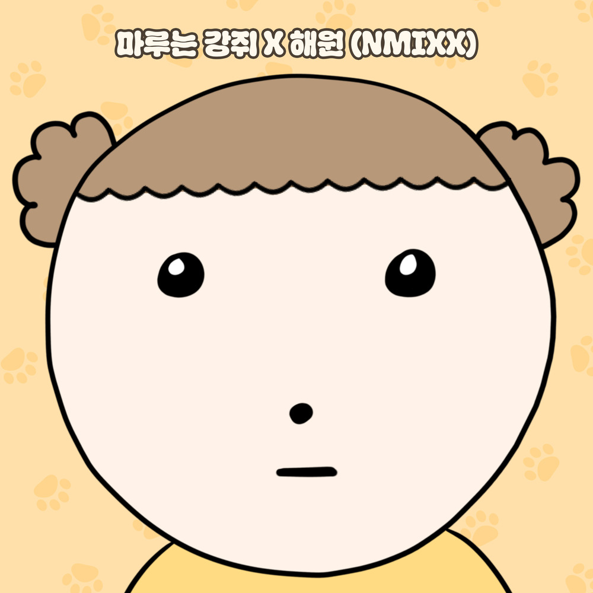

안녕하세요, 라보엠입니다.
오늘은 최근 많은 사랑을 받고 있는 네이버웹툰 ‘마루는 강쥐’의 OST, 엔믹스(NMIXX) 리더 오해원이 부른 노래 ‘마루는 강쥐’를 소개해드리려고 합니다. 갑자기 유아틱한 노래 소개라 깜짝 놀라셨을지도 모르지만, 제 아이가 많이 들어서 저도 중독이 되어버렸거든요, 특히 엔믹스를 좋아해서 해원이 불렀다는걸 알고 더 정감이 갔습니다. 웹툰 팬이라면 이미 기대하셨을 이 곡은, 해원 특유의 밝고 통통 튀는 에너지와 마루의 엉뚱발랄한 캐릭터가 완벽하게 어우러진 OST로, 2024년 9월에 발매된 곡입니다.
웹툰 ‘마루는 강쥐’와 OST의 탄생
‘마루는 강쥐’는 사람이 된 강아지 마루와 주변 인물들이 벌이는 유쾌하고 따뜻한 이야기를 담은 웹툰으로, 참신한 소재와 사랑스러운 캐릭터로 큰 인기를 끌고 있습니다. OST ‘마루는 강쥐’는 바로 이 마루의 엉뚱발랄함과 귀여움을 음악으로 표현한 곡입니다. 해원이 직접 웹툰의 팬임을 밝혀 더욱 화제가 되었고, 발매 전부터 OST 티저 이미지가 공개되며 팬들의 기대감을 한껏 높였습니다.
‘마루는 강쥐’는 귀여운 반려동물이 연상되는 가사와 단번에 귀를 사로잡는 중독성 있는 멜로디가 인상적인 곡입니다. 마루가 사람으로 변신해 세상을 탐험하는 엉뚱함, 그리고 강아지 특유의 순수함과 발랄함이 해원의 맑고 경쾌한 보컬과 만나 곡 전체에 에너지를 불어넣습니다. 특히, 해원의 통통 튀는 음색과 밝은 분위기는 마루의 캐릭터와 완벽하게 어우러져, 듣는 이로 하여금 자연스럽게 미소 짓게 만듭니다. 가사는 마치 귀여운 강아지와 함께 뛰노는 듯한 상상력을 자극하며, 일상의 소소한 행복과 따뜻함을 전합니다.
마루는 강쥐 웹툰 원작
마루는 강쥐
우리 집 강아지 마루가 사람이 되었다, 그것도 5살 아이로!강아지 + 어린아이의 무한 에너지와 호기심을 지닌 사고뭉치 강쥐 탄생! 마루야~! 또 어디가!!! 유쾌한 이웃들과 우당탕탕 즐거운 마루
comic.naver.com
마루는 강쥐 - 노래 가사
마루 킁킁 마루 쫑긋 마루 덥석
총총총총총 짧은 다리 파다닥
마루 폴짝 마루 까딱 마루 꼴깍
총총총총총 언니를 따라 가요
마루 깜짝 마루 움찔 마루 머쓱
총총총총총 삐진 모습 새초롬
마루 살짝 마루 깜빡 마루 짝짝
총총총총총 언니랑 함께 가요
우리 집 제일 가는 귀요미
고구마 주세요
작지만 씩씩한 마루는
위풍당당한 강쥐 총총총
우리집 제일 가는 꼬꼬마
사랑을 주세요
작지만 강력한 마루는
어마어마한 강쥐 총총총
마루 킁킁 마루 쫑긋 마루 덥석
총총총총총 짧은 다리 파다닥
마루 폴짝 마루 까딱 마루 꼴깍
총총총총총 언니를 따라 가요
마루 깜짝 마루 움찔 마루 머쓱
총총총총총 삐진 모습 새초롬
마루 살짝 마루 깜빡 마루 짝짝
총총총총총 언니랑 함께 가요
링가링가링가 링가링가링가 링가링가링가
언니가 좋아
링가링가링가 링가링가링가 링가링가링가
마루도 좋아
링가링가링가 링가링가링가 링가링가링가
언니가 좋아
링가링가링가 링가링가링가 링가링가링가링가
모두가 좋아
마루 킁킁 마루 쫑긋 마루 덥석
총총총총총 짧은 다리 파다닥
마루 폴짝 마루 까딱 마루 꼴깍
총총총총총 언니를 따라 가요
마루 깜짝 마루 움찔 마루 머쓱
총총총총총 삐진 모습 새초롬
마루 살짝 마루 깜빡 마루 짝짝
총총총총총 언니랑 함께 가요
총총총총총 마루도 함께 가요
모두 다 모두 다 모두 다 함께
음악적 완성도와 OST의 의미
‘마루는 강쥐’는 Jay Lee와 김채윤이 작사, 작곡을 맡아, 3분 3초의 짧은 러닝타임 안에 마루의 귀여움과 해원의 상큼함을 가득 담아냈습니다. 곡 전체가 밝고 경쾌하게 흘러가면서도, 중독성 있는 후렴구와 해원의 맑은 보컬이 어우러져 한 번만 들어도 머릿속에 맴도는 테마송이 완성되었습니다. 웹툰을 사랑하는 이들에게는 캐릭터의 감정선을 더욱 풍부하게 해주고, 평소 OST를 즐겨 듣는 리스너들에게도 기분 좋은 에너지를 선사하는 곡입니다.
오해원(NMIXX) – 리더의 새로운 도전
해원은 JYP엔터테인먼트 소속 NMIXX의 메인보컬이자 리더로, 탄탄한 실력과 쿨하고 털털한 성격, 그리고 귀엽고 순한 강아지상 외모로 많은 사랑을 받고 있습니다[5]. 평소에도 밝고 긍정적인 에너지로 팀의 분위기 메이커 역할을 해왔던 해원이, 이번 OST에서는 자신만의 귀엽고 엉뚱한 매력을 한껏 발산하며 곡의 완성도를 높였습니다.
해원은 “웹툰 ‘마루는 강쥐’의 팬으로서 OST에 참여하게 되어 정말 기쁘다”고 소감을 전하기도 했습니다. 실제로 곡 곳곳에 해원만의 밝은 기운이 녹아 있어, 평소 팬들이 사랑하는 해원의 모습을 음악에서도 고스란히 느낄 수 있습니다.

맺음말
오해원이 부른 ‘마루는 강쥐’는 귀여운 강아지 마루의 엉뚱함과 해원의 통통 튀는 매력이 완벽하게 어우러진, 듣기만 해도 기분 좋아지는 OST입니다. 웹툰의 팬이라면 물론, 밝고 경쾌한 음악을 좋아하는 분이라면 꼭 한 번 들어보시길 추천합니다. 오늘도 ‘마루는 강쥐’와 함께, 일상에 작은 미소와 행복이 깃들기를 바랍니다!